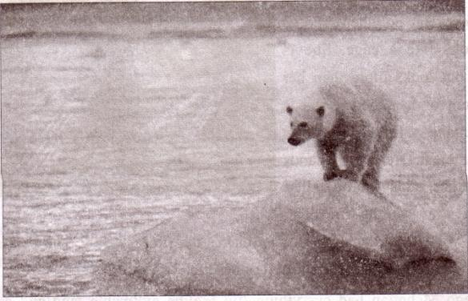
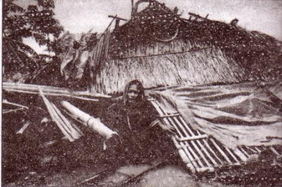
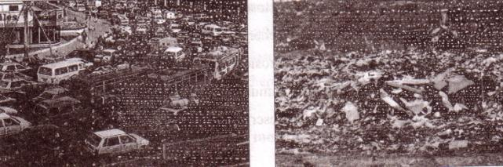
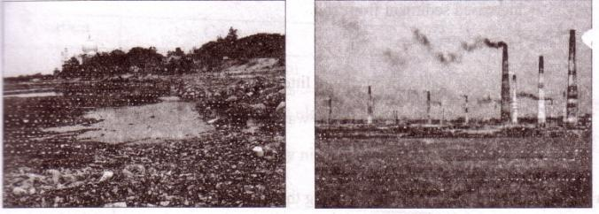
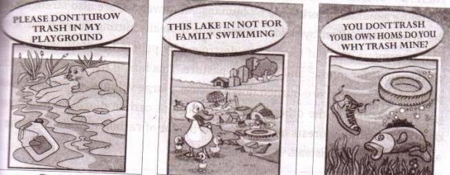
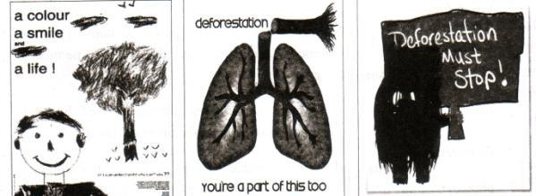
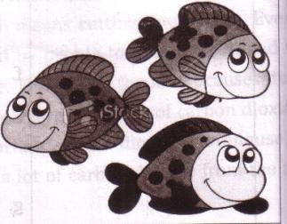
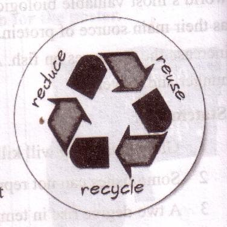

Unit Five
Climate change
49
Learning outcomes
After we have studied this unit, we will be able to
-
comprehend and summarize texts.
-
ask and answer questions.
-
take part in debates on given topics.
-
take part in role playing and making dialogues.
-
draft and deliver lectures on given topics.
-
write letters to newspaper highlighting certain problems.
-
write slogans for posters.
Lesson 1: The greed of the roaring rivers
A . Read the following text and answer the questions.
Meherjan lives in a slum on the Sirajgonj Town Protection Embankment. Her polythene-roofed shelter looks like a cage. She is nearly 45 but looks more than age. In front of her shelter, she is trying to make a fire to cook the day's only meal. Her weak hands, day's only meal. Her weak hands tremble as she adds some fallen leaves and straw to the fire. The whispering wind from the river Jamuna makes the fire unsteady. The dancing of the flames reminds Meherjan of the turmoil in her life.

Not long ago Meherjan had everything--- a family, cultivable land and cattle. The erosion of the Jamuna consumed all her landed property gradually. It finally claimed her only shelter during the last monsoon. It took the river only a day to demolish Meher's house, trees, vegetable garden and the bamboo bush. She had a happy family once. Over the years, she lost her husband and her family to diseases that cruel Hunger and poverty brought to the family. Now, she is the only one left to live on with the loss and the pain. The greedy Jamuna has shattered her dreams and happiness.
There are thousand others waiting to share the same fate like Meherjan. Bangladesh is a land of rivers that affect its people. Erosion is a harsh reality for the people living along the river banks. During each monsoon many more villages are threatened by the roaring of rivers like the Jamuna the Padma and the Meghna. It is estimated that river, erosion makes at least 100,000 people homeless every year in Bangladesh. In fact, river erosion is one of the main dangers caused by climate change. If we can't take prompt actions to adapt to climate change, there will be thousands of more Meherjans in our towns and villages every year.
B . For each phrase below choose the meaning that is closest to the meaning used in the text above.
511. In paragraph 3 ‘roaring rivers’ mean
a. rivers that flow strongly making wild sounds
b. rivers having many rowing boats in them
c. rivers that make people cry out
d. rivers that have noisy fishes
2. landed property
a. a rented piece of land
b. a piece of land on the bank of a river
c. Property in the form of a source of income to its owner
d. property used only as an agricultural farm
3. whispering wind
a. wind that blows from across the river
b. wind that blows with a hissing sound
c. wind that helps someone make a fire
d. wind that blows in summer
4 . dancing of the flame
a. a traditional form of folk dance
b. a flame that makes people dance around it
c. a flame that is made unstable by the blast of air
d. a flame made by people to remember their pasts
C . Ask and answer the following questions in pairs.
a. What does Meherjan use to make fire for cooking her meals?
b. What property did Meherjan lose due to river erosion?
c. What do you know about Meherjan's family?
d. In which season does river erosion most likely occur?
e. Why is the phrase ‘greedy Jamuna’ used to describe the river? What greed do you notice in the description?
52D . Compl ete the summary of Meherjan's life with words/phrases from the box.
Meherjan is a typical (1) [dash] woman who lives in a slum. She lost her shelter and properties (2) [dash] the erosion of the river Jamuna. She also lost her family. Her husband had died of diseases caused by poverty and (3) [dash] Now, she is only a (4) [dash] Like Meherjan there are erosion is still erosion (5) [dash] of river erosion. Rive erosion is still posing (6) [dash] to the lives and properties of thousands of people. People living (7) [dash] the rivers are the most likely victims of river erosion. Each year about (8) [dash] people become homeless due to river erosion in Bangladesh. Meherjan's life is just one (9) [dash] of how climate change (10) [dash] the lives of thousands of people.
|
Victims |
affects |
close to |
slum dweller |
homeless |
|
threats |
example |
due to |
shortage of food |
one lakh |
E . Debate: Get into two groups of 3/4. Decide which group will speak for/against the motion. In your group, first, discuss and note down five/six points to support/ oppose the statement given below. Then select the speakers from each group to start the debate.
Statement: Humans can't do anything to control the course of nature.
Lesson 2: Environmental pollution
A . Look at the pictures below and discuss the questions.
1. What do you see in each picture?
2. What are some of the common sources of environmental pollution'?
3. Which of these sources are most threatening for your environment?

|
Picture 1 |
Picture 2 |

|
Picture 3 |
Picture 4 |
B . Now read the following passage to know more about environmental pollution in Bangladesh.
Bangladesh is now apparently in the grip of all sorts of pollution like air pollution, soil Pollution and water pollution. The dwellers of the urban areas are the worst suffers of such pollution. The indiscriminate industrialization process in Bangladesh over the past decades has created significant environmental problems. We will now read about some of the most common types of environmental pollutions and ways of coping with them.
Air pollution
Air pollution comes from a wide variety of sources. In Bangladesh poisonous exhaust industrial plants, brick kilns, old or poorly-serviced vehicles and dust from roads and construction sites are some of the major sources of air pollution.
we can minimise this type of pollution by making less use of motor vehicles and avoiding the use of vehicles older than 20 years. We may also use proper lubricants to lessen the level of emission and pollutants. We can encourage people to use Compressed Natural Gas (CNG) or Liquid Petroleum Gas (LPG) for fuelling their cars .The government may relocate hazardous industries like brick kilns to areas away human habitations.
Water pollution
Water pollution can occur in oceans, rivers, lakes, ponds and underground reservoirs. As different water sources flow together, the pollution can spread easily and quickly. Causes of water pollution include:
54-
increased sediment from soil
-
erosion
-
improper waste disposal and littering
-
leakage of soil pollution into water supplies
-
organic materials that decay in water supplies etc.
In fact, polluting the land means polluting the water. Throwing away a toxic substance on the ground near a water space means it eventually reaches a body of water. As a result, the water is polluted. Industrial wastes must not be disposed in rivers or lakes. We need to be more careful about disposing household wastes too. Use of pesticides means that when it rains on the lawn or garden, chemicals wash into the water bodies. Therefore, we must be aware of the dangers of using pesticides as they may pollute our rivers, canals and lakes.
Soil pollution
Among the most significant causes of soil pollution is the enormous volume of industrial waste which is being produced every day but not disposed properly. The mismanagement of household wastes, particularly the polythene shopping bags, has caused serious threat to the soil, and the drainage system. Another cause for soil pollution is the use of agricultural pesticides, fertilizers etc. Sometimes fuel leakages from automobiles may get washed away by rain and seep into the nearby soil.
Pesticides and fertilizers are useful for plant growth but their overuse has led to soil pollution. Natural fertilizers and compost can be used instead of their chemical alternatives. Recycling is another way to reduce and control soil pollution. Recycling papers, plastics and other materials reduces the volume of refuse in landfills. De- forestation also causes erosion, pollution and the loss of fertility in the topsoil. Planting trees and re-forestation help prevent soil erosion and pollution.
C . From your reading of the above text complete each blank space in the table with no more than two words and/or numbers.
55|
Pollution |
Causes |
Suggestions |
| Air pollution |
[ dash] plants
and poorly [dash]
|
which are older than [dash] Years.
level |
|
- |
- | minimum.
[dash] |
|
Soil Pollution |
[dash] properly.
Shopping bags
pesticides and [dash] |
agricultural purpose
plastics, and other materials.
prevent loss of fertility in the [dash] |
D . In groups of four, prepare a lecture of 1 0 0 words on the topic below. First, work together to prepare a draft of the lecture. When the draft is complete, select a group member to deliver the lecture to the rest of the class.
Topic: Polluting the land means polluting the water
E . Look at the three posters below. What messages do they give? Which one do you like most? Tell your friend, why you like it.

|
Poster 1 |
Poster 2 |
Poster 3 |
Lesson 3: Man and climate
A . Discuss the questions in pairs.
1. Can man influence the climate? If the answer is yes, explain how?
2. Which human activities are responsible for increasing carbon dioxide in
the atmosphere?
-
How can trees help save our environment?
Now read the text below and find answers to the above questions.
Humans can neither change the sun's radiation nor the earth's orbit around the sun. But they can control the increase in the amount of greenhouse gases and its effect on the atmosphere. Only during the last hundred years the carbon dioxide concentration has been raised alarmingly in the atmosphere and we humans car be held responsible for this.
The main cause of the increase in carbon dioxide level in the atmosphere is the burning of fossil fuels. Since the end of the 19th century, industrial activities increased rapidly giving rise to many factories. These factories required energy, which was produced through the combustion of coal. Besides coal, other source of energy such as mineral oil and natural gas were also burned to heat our houses, move cars and airplanes or to produce electricity. Nowadays, about 8 million barrels of crude oil are burned daily. Every time a fossil raw material ' burned, it releases carbon dioxide into the air.
Therefore, it is clear that more and more greenhouse gases like carbon dioxide are being generated worldwide by humans. Moreover, we are also strengthening the greenhouse effect by deforestation, which means cutting down trees. Every year enormous areas of forests are destroyed by people to obtain wood and to clear regions for mining and to create pasture. This loss of the forest causes dual problems. Trees that are burned down release a large volumes of carbon dioxide gas into the air. On the other hand, an important carbon dioxide storehouse is destroyed with the forests as forests absorb a lot of carbon dioxide from the air and deliver oxygen instead.
57B . Read the statements below and say if they are true/false. If false, give the correct information.
1. Fossil fuels are burned at an alarming rate due to industrialization.
2. Coal is the only fuel used for generating energy.
3. At present, nearly 85 million barrels of crude oil are used weekly.
4. Deforestation is caused by nature.
5. Forests help consume carbon dioxide gases from the air.
C . Match the meanings in column B and the words/phrases in column A.
|
A |
B |
| 1. Sun's radiation a. 2. Fossil fuels 3 . Combustion of coals 4. Crude oil 5. Raw materials 6. Deforestation 7. photosynthesis | a. energy that is transmitted from sun in the form of rays or waves or particles b. the process used by plants to convert light energy captured from the sun to chemical energy c. a basic material or substance used in the production or manufacturing of goods d. non-renewable sources of energy that comes from the remains of plants and animals e. intentional destructions or removal of trees and other vegetation’s for agricultural, commercial, housing or firewood use f. a naturally occurring, unrefined petroleum product that can be refined to produce usable products such as diesel, gasoline, heating oil, jet fuel, kerosene etc. g. burning of coal usually in industrial plants. |
D . Write a letter to the Editor of a newspaper expressing your concern about growing deforestation in your area. Describe how deforestation is changing you r environment. Also suggest what actions could be taken to stop cutting down trees. Follow the clues below.
-
dangers caused by deforestation
-
increase of carbon dioxide in the atmosphere
-
the greenhouse effect
-
making people aware of the adverse effect of deforestation
-
making an action plan to stop deforestation
E . Look at these posters below. They are made to make people aware of the dangers of deforestation. In groups, design a poster to show the dangers caused by deforestation. Then write a slogan for the poster.

Lesson 4: Putting our fish in hot water!
A . Spend one minute thinking about your life as a fish. In pairs, talk to another
"fish" about your life as a fish.
B . Do you agree with the following statements on fish and fishing?
Discuss with your Partner(s).
a. Fish will never disappear. There will always be enough fish to feed the world.

b. In many ways, people are the same as fish.
c. The hobby of fishing should be banned to help protect fish population.
C . Read the text below and say if the statements that follow are true/false. If false, give the correct information.
Fish population is in serious danger from global warming. Climate change is increasing the water temperature in rivers, lakes and seas. This means there is less food and oxygen available for fish. It also means the fish may not grow fully and may have fewer offspring. Some fishes will become extinct if temperatures rise even by one or two degrees.
Climate change increases the pressure on fish population. Fishes are one of the world's most valuable biological assets. Forty percent of people in the world eat fish as their main source of protein. If we fail to reduce greenhouse gas emissions, we will increase the pressures on fish. As a result, people who depend on fish will suffer from hunger and poverty.
Statements:
1. Global warming will kill all the fishes within ten years.
2. Some fishes cannot reproduce if the water is too warm.
3. A two degree rise in temperature will make some species extinct.
4. Fishes are valuable economic investments.
5. Nearly 14% of people depend on fish for their basic food needs.
6. People will suffer a lot if greater pressure is put on fish.
D . Role play: Student A is a fish. Student B is a fisherman. First write a dialogue between the two. Then act it out. Change roles and repeat the role- play
Role A - A FISH
I am a fish. I know things are getting serious. Ice is melting, rivers are drying up and millions of my cousins have disappeared because of over-fishing. I heard it is because of humans' carelessness and greed. Let the humans know what is really happening in the oceans and rivers.
60Role B - A FISHERMAN
I am not worried about my future. I have seen no change in the number of fish I catch each year. There will always be plenty of fish. The oceans are too big to be changed by global warming. I think that scientists produce reports just to become famous.
E . You are a nature lover. Write a letter to the organizers of the National Climate Change Conference in Bangladesh. Tell them about how global warming is changing your environment. Also suggest what they can do to help save fish population.
Lesson 5: A friend of the Earth
A . Discuss the questions in pairs.
1. Do you throw away empty cans and bottles'?
2. What do you do with your old newspapers?
3. What happens to the garbage after you throw it away?

B . Read the following text carefully to know about how we can save our environment.
LET'S SAVE OUR PLANET!
Everyone must play a part in protecting the environment. There are many things you can do on your own every day to help save the planet. Here are some suggestions.
REDUCE!
Really, the best thing we can do for the planet is to use its resources properly. Our consumer society is mainly responsible for the environmental crisis. Here are some questions you can ask yourself before buying something, "Do I really need this?" or "Is there another product which would do the same thing but more sustainable?" Or ask the question, "Will this last a long time?" Some other questions may be, "Do I know how this item was made, how it will be used and how it will be disposed of?”
61REUSE!
What do you think of using your own ceramic cup or mug at your school or local club? It means there are no plastic cups to throw away. You can wash it and reuse it every day. Unfortunately, we are encouraged to buy a new "improved" item even if the one we have can be repaired or reused. When we buy things, we should buy items which are durable; we should use them properly, and have them repaired when necessary. If we practise this, many things can not only last a life-time, but also be passed on for future use. However, If something is truly unusable for its original purposes, try to be more creative and think of how else it might be used. When you're done with it, think of whether someone else might be able to use it. You can donate some of the things to the poor. You may also sell some of your used items through personal ads in a local newspaper.
RECYCLE!
Rather than throwing an item out when neither you nor anyone else can make use of it, have it recycled. And while recycling is not possible, it is better to send goods to a landfill or have them burned up. Find out what types of materials can be recycled in your area. Clean and sort the materials before putting them out in the bin. Recycling your drink and food cans means there will be less trash in a resource recovery facility or landfill. Moreover, a company can use the old cans to make new ones.
C . Now ask and answer these questions in pairs.
1. How can you cut down your shopping list?
2. What can you do to reuse things?
3. What kind of household goods, clothes and toys, can be donated?
4. How can you sell your used items?
5. How recycling may help save our environment?
D . Complete the blank spaces in table below.
|
What is it |
Examples | |
|
Reduce | To create less wastes, so that there is less items that must be recycled or [dash] away. | Using a towel for drying hair instead of using an electric hair- dryer |
|
Reuse |
To buy things that can be used again and again, or to find out another way of. [dash] that item. |
Using your own ceramic cup at your school or club means there are no [dash] cups to throw away. You can [dash] it and reuse it every day. |
|
Recycle | Instead of throwing an item in the garbage, to give it to a person or company who will [dash] it, or make something else with it. |
Giving/selling used plastic bottles to someone to make something else from them. |
E . To do this exercise, you will need information about recycling in your local community. If you don't know, ask your teacher to help you learn what you can recycle from your home. Then choose one item from the box to talk about it following the model below.
A: What are you going to do with these old magazines?
B: I don't know what to do with these.
A: Why don't you reuse/recycle them?
B: How can I do that?
A: It's easy. Take it to a shop that buys old newspapers and magazines for
recycling.
Household items
glass bottles and jars, containers and toys,
aluminum foils or trays, aerosol cans, box
boards, magazines and catalogues, old CDs